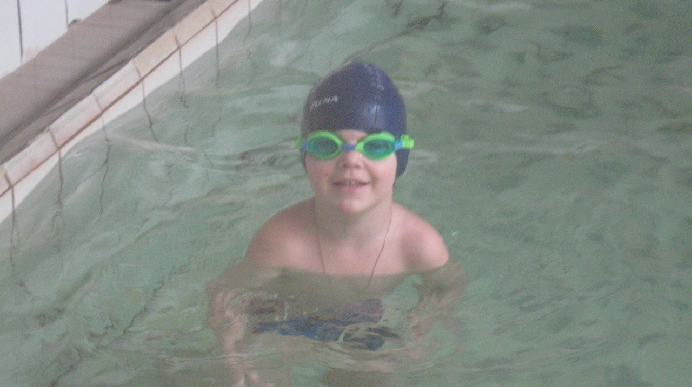

Мене звати Нікіта і я обожню спорт
В дитинстві я завжди займався спортом, ходив на різні гуртки.
Найбільше мені подобалося ходити на басейн. Я дуже любив плавати.
Щоб я міг постояти за себе пішов на айкідо
Басейн
Я дуже любив плавати та і зараз люблю плавати особливо на морі битися з волнами.
На басейн я ходив 5 років і мені там дуже подобалось, особливо ходити в зимку. В зимку я завжди після занять купував собі гарячий шоколад, щоб зігрітися.
Також я їздив на багато змагань, де отримав дві медалі за 1 та 2 місце.
Я вважаю, що вміння плавати - це дуже корисна навичка, яку повинен мати кожен.
Я ходив в Наука Спорт це чудовий заклад де вчать плавати з дитинсва різними видами.
Там є спортзал, великий басейн, дитячий басейн також там проходить акваеробіка та вправи для вагітних.
Якщо ти йдеш в басейн з дитинства то ти спочатку ходиш в дитячий басейн"лігушатник" потім коли вже трохи будеш вміти плавати то переходиш в великий басейн
Айкідо
В дитинстві батьки відправили мене на айкідо, щоб я міг за себе постояти.
Туди я проходив 6 років та отримав найвищий пояс "чорний" після чого пішов з айкідо.
Спочатку мені не подобалось туди ходити але з часом стало подобатися. Потім зі мною почав ходити мій друг і ми разом займалися.
В кожну пятницю у нас був футбол але не звичайни а на колінах"айкибол". Ділились на дві команди, але грали тількі ті кто приніс ставку такі як яблуко, сок..